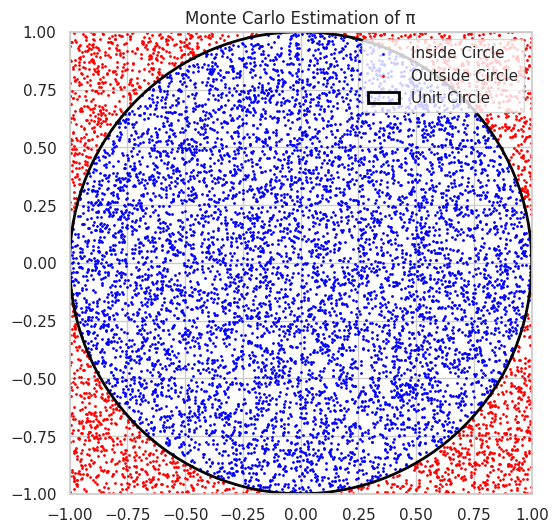
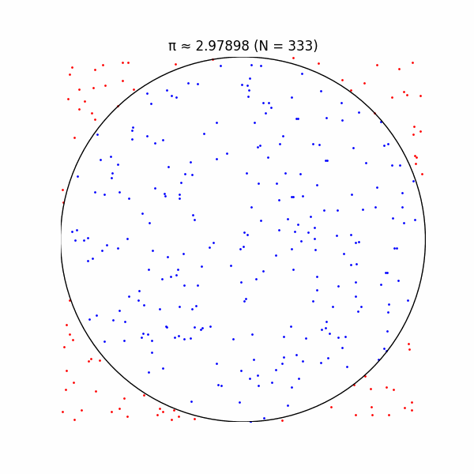
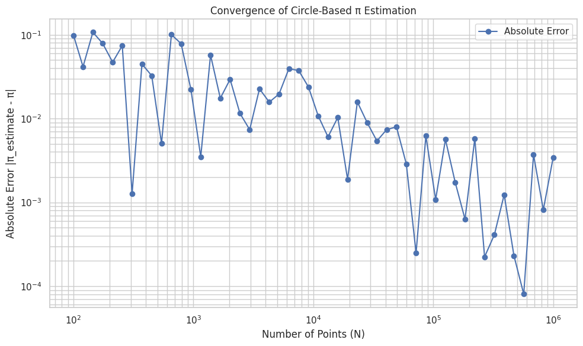
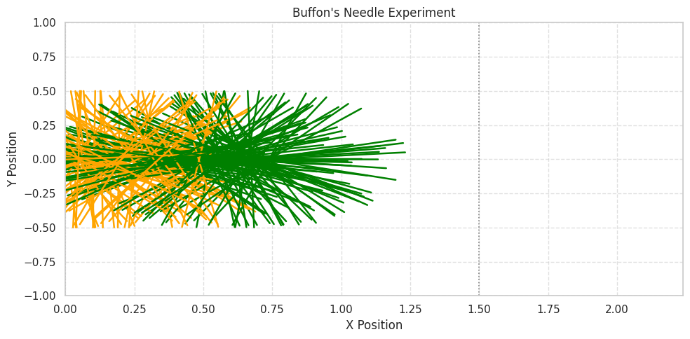
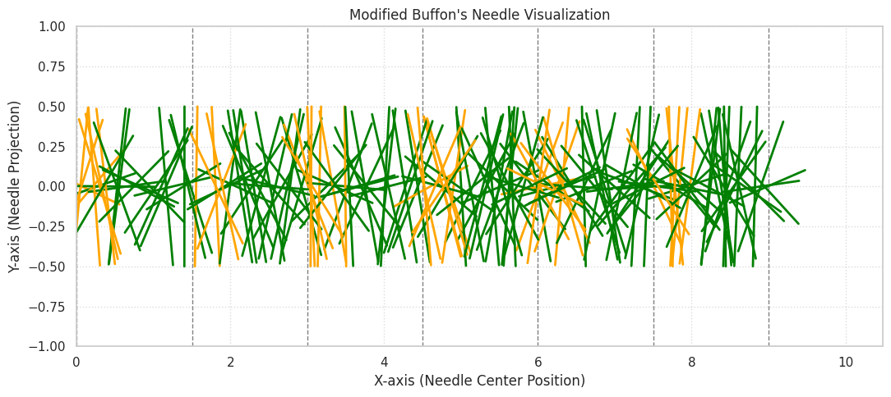
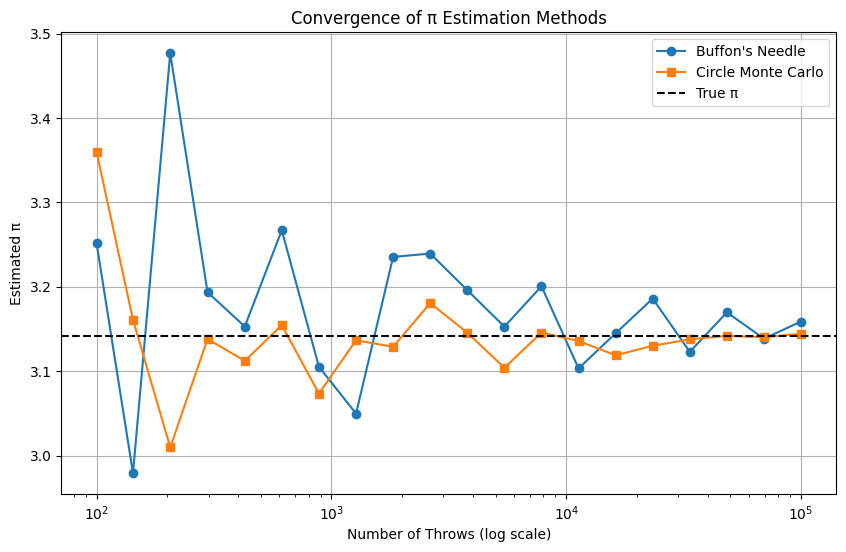
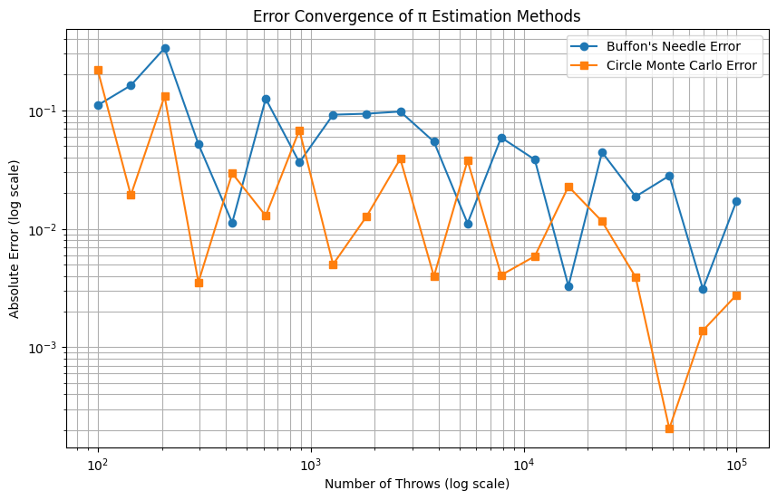

Problem 2
📘 Part 1: Estimating π Using a Circle
1. Theoretical Foundation
🧠 Conceptual Overview
Monte Carlo methods use randomness to solve problems that might be deterministic in principle. For estimating π, we use the geometric relationship between a circle and its bounding square:
- Consider a unit circle (radius = 1) centered at the origin (0,0).
- The circle is inscribed inside a square with side length 2, spanning coordinates from (-1, -1) to (1, 1).
- The area of the unit circle is:
$$ A_{circle}=\pi r^2=\pi\cdot1^2=\pi $$
- The area of the square is:
$$ A_{square}=(2r)^2=(2\cdot1)^2=4 $$
- The ratio of the areas is:
$$ \frac{A_{circle}}{A_{square}}=\frac{\pi}{4} $$
Thus, if we randomly generate points uniformly in the square, the probability that a point falls inside the circle is:
$$ P(\text{point in circle})=\frac{\pi}{4} $$
🔢 Monte Carlo Estimation of π
To estimate π using this geometric probability:
- Generate a large number of random points \((x, y)\) in the square \([-1, 1] \times [-1, 1]\).
- Check whether each point lies inside the unit circle using:
$$ x^2 + y^2 \leq 1 $$
- Count the number of points that fall inside the circle: \(N_{circle}\)
- Total number of generated points: \(N_{total}\)
- Estimate π using:
$$ \hat{\pi}=4\cdot\frac{N_{circle}}{N_{total}} $$
✅ Summary
- Monte Carlo estimation of π relies on simulating randomness and measuring proportions.
- The larger the number of points \(N_{total}\), the more accurate the estimation.
- This method visually and intuitively links geometry, probability, and numerical approximation.

# 🧪 Monte Carlo Estimation of Pi using Circle Method
import numpy as np
import matplotlib.pyplot as plt
# Number of random points to generate
N = 10000 # You can increase this for better accuracy
# Generate random (x, y) points in [-1, 1] x [-1, 1]
x = np.random.uniform(-1, 1, N)
y = np.random.uniform(-1, 1, N)
# Check if points fall inside the unit circle (x^2 + y^2 <= 1)
inside_circle = x**2 + y**2 <= 1
# Count how many are inside the circle
points_inside = np.sum(inside_circle)
# Estimate pi using the Monte Carlo formula
pi_estimate = 4 * points_inside / N
# Print result
print(f"Estimated π: {pi_estimate}")
print(f"Actual π: {np.pi}")
print(f"Error: {abs(np.pi - pi_estimate)}")
# 🎨 Visualization
fig, ax = plt.subplots(figsize=(6, 6))
ax.set_aspect('equal')
ax.set_title('Monte Carlo Estimation of π')
# Plot points
ax.scatter(x[inside_circle], y[inside_circle], color='blue', s=1, label='Inside Circle')
ax.scatter(x[~inside_circle], y[~inside_circle], color='red', s=1, label='Outside Circle')
# Draw the unit circle boundary for reference
circle = plt.Circle((0, 0), 1, color='black', fill=False, linewidth=2, label='Unit Circle')
ax.add_patch(circle)
# Set limits and labels
ax.set_xlim(-1, 1)
ax.set_ylim(-1, 1)
ax.legend(loc='upper right')
plt.grid(True)
plt.show()
🖥 2. Simulation
In this section, we implement a Monte Carlo simulation to estimate the value of π by randomly generating points in a square and analyzing how many fall within an inscribed circle.
🧪 Simulation Steps
- We consider a unit circle of radius 1 centered at the origin \((0,0)\).
- This circle is inscribed in a square with side length 2, which spans coordinates:
$$ [-1,1] \times [-1,1] $$
- The idea is to generate \(N\) random points \((x, y)\) uniformly within this square and count how many fall inside the circle.
➕ Inside Circle Criterion
- A point \((x, y)\) lies inside the unit circle if:
$$ x^2 + y^2 \leq 1 $$
- Let \(N_{\text{circle}}\) be the number of points that satisfy this condition.
- Let \(N_{\text{total}}\) be the total number of points generated.
🔢 Monte Carlo Estimation Formula
- The probability of a point falling inside the circle is approximately:
$$ P = \frac{\pi}{4} $$
- Therefore, we estimate π using:
$$ \hat{\pi} = 4 \cdot \frac{N_{\text{circle}}}{N_{\text{total}}} $$
📝 Notes
- The accuracy of the estimate improves as \(N_{\text{total}}\) increases.
- Randomness introduces variance; repeated runs may yield slightly different values.
- This approach is simple but powerful and visually intuitive.
> ✅ This method demonstrates how probabilistic simulations can approximate deterministic mathematical constants using geometry.
3 Visualization
The following Python code generates a scatter plot distinguishing points inside and outside the unit circle. import numpy as np import matplotlib.pyplot as plt

import numpy as np
import matplotlib.pyplot as plt
# Set random seed for reproducibility
np.random.seed(42)
def estimate_pi_circle(N):
# Generate N random points in [-1, 1] x [-1, 1]
x = np.random.uniform(-1, 1, N)
y = np.random.uniform(-1, 1, N)
# Check which points lie inside the unit circle
inside_circle = x**2 + y**2 <= 1
M = np.sum(inside_circle)
# Estimate pi
pi_estimate = 4 * M / N
return x, y, inside_circle, pi_estimate
# Run simulation with N = 10000
N = 10000
x, y, inside_circle, pi_estimate = estimate_pi_circle(N)
# Plot
plt.figure(figsize=(8, 8))
plt.scatter(x[inside_circle], y[inside_circle], c='blue', s=1, label='Inside Circle')
plt.scatter(x[~inside_circle], y[~inside_circle], c='red', s=1, label='Outside Circle')
circle = plt.Circle((0, 0), 1, edgecolor='black', facecolor='none')
plt.gca().add_patch(circle)
plt.gca().set_aspect('equal')
plt.xlim(-1, 1)
plt.ylim(-1, 1)
plt.title(f'Circle Method: π ≈ {pi_estimate:.5f}, N = {N}')
plt.xlabel('x')
plt.ylabel('y')
plt.legend()
plt.grid(True)
plt.show()
print(f"Estimated π: {pi_estimate}")
4 Analysis

import numpy as np
import matplotlib.pyplot as plt
# Monte Carlo yöntemiyle pi tahmini fonksiyonu
def estimate_pi_circle(N):
np.random.seed(0) # Tekrarlanabilirlik için
x = np.random.rand(N)
y = np.random.rand(N)
inside_circle = (x**2 + y**2) <= 1
count_inside = np.sum(inside_circle)
pi_estimate = 4 * count_inside / N
return x, y, inside_circle, pi_estimate
# Farklı nokta sayılarıyla hata analizi
Ns = np.logspace(2, 6, num=50, dtype=int) # 100'den 1,000,000'a kadar logaritmik artışla
errors = []
pi_true = np.pi
for N in Ns:
_, _, _, pi_estimate = estimate_pi_circle(N)
errors.append(abs(pi_estimate - pi_true))
# Hata grafiği (log-log eksenlerde)
plt.figure(figsize=(10, 6))
plt.loglog(Ns, errors, 'o-', label='Absolute Error')
plt.title('Convergence of Circle-Based π Estimation')
plt.xlabel('Number of Points (N)')
plt.ylabel('Absolute Error |π_estimate - π|')
plt.grid(True, which='both')
plt.legend()
plt.tight_layout()
plt.show()
✅ PART 2: Estimating π Using Buffon’s Needle
📘 1. Theoretical Foundation
🧠 Introduction to Buffon’s Needle Problem
Buffon’s Needle is a classic probability problem that provides a method to estimate π using random trials involving dropping a needle on a plane ruled with parallel lines. The problem explores the probability that a needle of length \(L\) dropped randomly onto a floor marked with parallel lines spaced \(d\) units apart will cross one of these lines.
🔍 Problem Setup and Assumptions
- The plane has parallel lines spaced at distance \(d\) apart.
- A needle of length \(L\) is randomly thrown onto the plane.
- The needle’s position is characterized by:
- The distance \(x\) from the needle’s center to the nearest line (with \(0 \leq x \leq \frac{d}{2}\)).
- The angle \(\theta\) between the needle and the parallel lines, where \(\theta\) is uniformly distributed in \([0, \frac{\pi}{2}]\) due to symmetry.
📐 Condition for Needle Crossing a Line
The needle crosses a line if the distance from the center to the closest line is less than or equal to half the projected length of the needle on the axis perpendicular to the lines:
📊 Probability of Crossing
The probability \(P\) that a needle crosses a line is derived by integrating over all possible positions and orientations, yielding:
This formula assumes \(L \leq d\).
🔢 Derivation of the π Estimation Formula
Let:
- \(L\) = length of the needle
- \(d\) = distance between the parallel lines
- \(N\) = total number of needle throws
- \(C\) = number of times the needle crosses a line
From the observed experimental probability,
and equating to the theoretical probability,
Solving for π, we get the estimate:
✅ Summary
- Buffon’s Needle problem connects geometry and probability to estimate π.
- It provides an elegant, physical experiment-based approach to numerical estimation.
- Accuracy improves as \(N\) (number of needle throws) increases.
- The problem is a foundational example in geometric probability and Monte Carlo methods.
2. Simulation
We now implement the simulation of Buffon’s Needle experiment to estimate π.
Simulation Procedure
- Step 1: Simulate \(N\) random needle drops on a plane with parallel lines spaced by distance \(d\).
- Step 2: For each needle drop:
- Sample the needle's center position \(x\) uniformly from \([0, d/2]\).
- Sample the needle's orientation angle \(\theta\) uniformly from \([0, \pi/2]\).
- Step 3: Determine whether the needle crosses a line by checking the condition:
- Step 4: Count the number of crossings \(C\).
- Step 5: Estimate π using the formula:

import numpy as np
import matplotlib.pyplot as plt
def simulate_buffon(L=1.0, d=1.5, num_drops=10000):
"""
Estimate π using Buffon's Needle method.
Parameters:
- L: needle length
- d: spacing between the parallel lines (should be ≥ L)
- num_drops: total needle throws
Returns:
- pi_approx: estimated value of π
- did_cross: boolean array indicating crossing needles
- centers, thetas: arrays of needle center x-coordinates and angles
"""
centers = np.random.uniform(0, d/2, num_drops)
thetas = np.random.uniform(-np.pi/2, np.pi/2, num_drops)
did_cross = centers <= (L/2) * np.abs(np.sin(thetas))
hits = np.count_nonzero(did_cross)
pi_approx = (2 * L * num_drops) / (d * hits) if hits > 0 else np.nan
return pi_approx, did_cross, centers, thetas
def visualize_needles(centers, thetas, did_cross, L=1.0, d=1.5, x_limit=None):
"""
Plot the result of Buffon's Needle simulation:
- Show parallel lines
- Plot needles in two colors based on crossing
Parameters:
- centers, thetas: x positions and angles of needles
- did_cross: array indicating if needle crosses a line
- L: length of each needle
- d: distance between the lines
- x_limit: max x-axis value for plotting
"""
if x_limit is None:
x_limit = np.max(centers) + d
plt.figure(figsize=(10, 5))
plt.title("Buffon's Needle Experiment")
# Draw the parallel lines
num_lines = int(np.ceil(x_limit / d)) + 1
for i in range(num_lines):
plt.axvline(i * d, color='gray', linestyle=':', linewidth=1.2)
y_offset = 0
for x, theta, cross in zip(centers, thetas, did_cross):
dx = (L/2) * np.cos(theta)
dy = (L/2) * np.sin(theta)
x0, x1 = x - dx, x + dx
y0, y1 = y_offset - dy, y_offset + dy
clr = 'orange' if cross else 'green'
plt.plot([x0, x1], [y0, y1], color=clr, lw=1.8)
plt.xlim(0, x_limit)
plt.ylim(-L, L)
plt.xlabel("X Position")
plt.ylabel("Y Position")
plt.grid(True, linestyle='--', alpha=0.6)
plt.tight_layout()
plt.show()
# Kullanım örneği:
L = 1.0
d = 1.5
N = 10000
pi_approx, did_cross, centers, thetas = simulate_buffon(L, d, N)
print(f"π yaklaşık değeri ({N} deneme): {pi_approx:.6f}")
# Görselleştirme (örnek 200 iğne)
visualize_needles(centers[:200], thetas[:200], did_cross[:200], L, d)

import numpy as np
import matplotlib.pyplot as plt
# Parameters
needle_length = 1.0 # Length of each needle
line_spacing = 1.5 # Distance between parallel lines
num_needles = 200 # Number of needles to visualize
# Generate random horizontal positions for the centers
center_x_positions = np.random.uniform(0, 6 * line_spacing, num_needles)
# Generate random angles in [-π/2, π/2] for more variety
needle_angles = np.random.uniform(-np.pi/2, np.pi/2, num_needles)
# Calculate wrapped x values and determine crossings
wrapped_positions = center_x_positions % line_spacing
is_crossing = np.abs(wrapped_positions) <= (needle_length / 2) * np.abs(np.sin(needle_angles))
# Set up the plot
plt.figure(figsize=(11, 5))
plt.title("Modified Buffon's Needle Visualization")
# Draw dashed vertical lines
x_max = np.max(center_x_positions) + line_spacing
for x in np.arange(0, x_max, line_spacing):
plt.axvline(x, color='gray', linestyle='--', linewidth=1)
# Plot each needle
for x_center, angle, crossed in zip(center_x_positions, needle_angles, is_crossing):
dx = (needle_length / 2) * np.cos(angle)
dy = (needle_length / 2) * np.sin(angle)
x0, x1 = x_center - dx, x_center + dx
y0, y1 = -dy, dy
needle_color = 'orange' if crossed else 'green'
plt.plot([x0, x1], [y0, y1], color=needle_color, linewidth=2)
# Axis labels and limits
plt.xlabel("X-axis (Needle Center Position)")
plt.ylabel("Y-axis (Needle Projection)")
plt.xlim(0, x_max)
plt.ylim(-needle_length, needle_length)
plt.grid(True, linestyle=':', alpha=0.7)
plt.tight_layout()
plt.show()
4. Analysis
We analyze the convergence behavior of the Buffon’s Needle simulation and compare it with the circle-based Monte Carlo method for estimating π.
🔍 Objectives
- Run the Buffon’s Needle simulation for increasing numbers of throws \(N\).
- Observe how the estimate of π improves (converges) as \(N\) increases.
- Plot the convergence of π estimates against the number of throws.
- Compare the convergence rate and accuracy with the circle-based Monte Carlo method.
📈 Methodology
- Define a range of sample sizes: \(N_1 < N_2 < \dots < N_k\).
- For each \(N_i\):
- Run the Buffon’s Needle simulation and record the estimated π value, \(\hat{\pi}_{needle}(N_i)\).
- Run the circle-based Monte Carlo simulation and record the estimated π value, \(\hat{\pi}_{circle}(N_i)\).
- Plot \(\hat{\pi}\) vs. \(N\) for both methods on the same graph.
- Analyze the error:
🔧 Python Implementation for Analysis
 
import numpy as np
import matplotlib.pyplot as plt
# Buffon's Needle simulation function
def buffon_needle_pi_estimate(L, d, N):
x_centers = np.random.uniform(0, d/2, N)
angles = np.random.uniform(0, np.pi/2, N)
crossings = x_centers <= (L/2)*np.sin(angles)
C = np.sum(crossings)
if C == 0:
return np.nan
return (2 * L * N) / (d * C)
# Circle-based Monte Carlo π estimation
def monte_carlo_circle_pi(N):
points = np.random.uniform(-1, 1, (N, 2))
inside_circle = np.sum(points[:,0]**2 + points[:,1]**2 <= 1)
return 4 * inside_circle / N
# Parameters
L = 1.0
d = 1.5
sample_sizes = np.logspace(2, 5, num=20, dtype=int) # From 100 to 100,000 throws
needle_estimates = []
circle_estimates = []
for N in sample_sizes:
pi_needle = buffon_needle_pi_estimate(L, d, N)
pi_circle = monte_carlo_circle_pi(N)
needle_estimates.append(pi_needle)
circle_estimates.append(pi_circle)
# Plotting convergence
plt.figure(figsize=(10,6))
plt.plot(sample_sizes, needle_estimates, 'o-', label="Buffon's Needle")
plt.plot(sample_sizes, circle_estimates, 's-', label="Circle Monte Carlo")
plt.axhline(np.pi, color='k', linestyle='--', label="True π")
plt.xscale('log')
plt.xlabel("Number of Throws (log scale)")
plt.ylabel("Estimated π")
plt.title("Convergence of π Estimation Methods")
plt.legend()
plt.grid(True)
plt.show()
# Plot absolute errors
plt.figure(figsize=(10,6))
plt.plot(sample_sizes, np.abs(np.pi - np.array(needle_estimates)), 'o-', label="Buffon's Needle Error")
plt.plot(sample_sizes, np.abs(np.pi - np.array(circle_estimates)), 's-', label="Circle Monte Carlo Error")
plt.xscale('log')
plt.yscale('log')
plt.xlabel("Number of Throws (log scale)")
plt.ylabel("Absolute Error (log scale)")
plt.title("Error Convergence of π Estimation Methods")
plt.legend()
plt.grid(True, which="both")
plt.show()